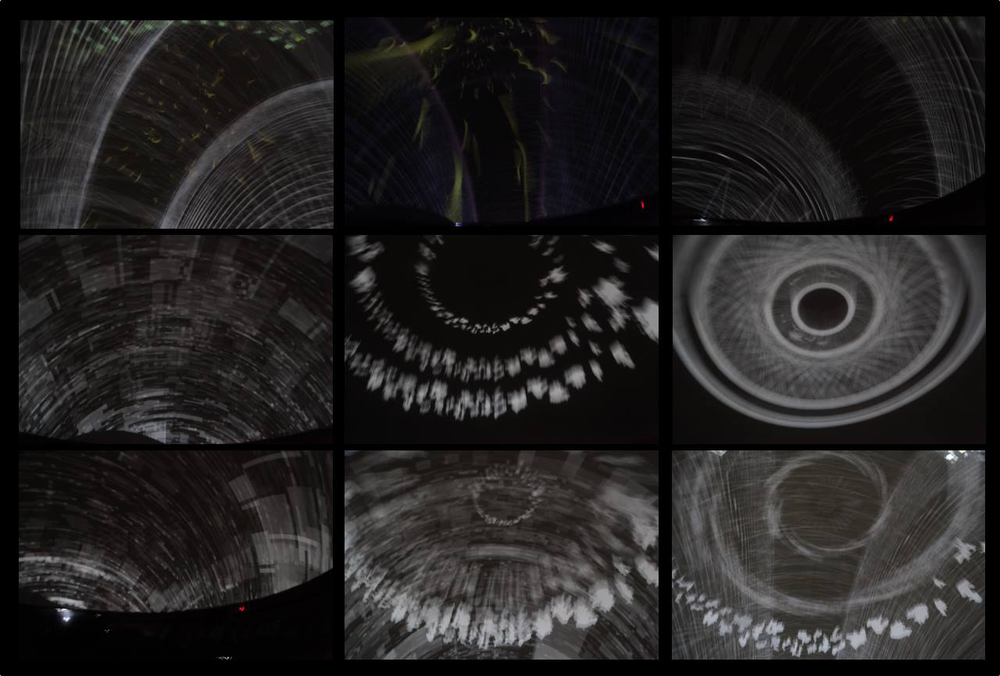

Taller Fulldome
Exploración audiovisual inspirada en procesos biológicos, estructuras orgánicas y dinámicas de emergencia.
Cosmogonías Bio Emergentes propone una exploración visual inspirada en procesos de emergencia biológica y sistemas complejos, generando paisajes audiovisuales que evocan estructuras orgánicas y dinámicas evolutivas.
La obra utiliza el entorno fulldome para construir una experiencia envolvente donde la percepción del espectador se desplaza entre escalas microscópicas y cósmicas.
La obra permite abordar el arte generativo y los sistemas complejos como herramientas de exploración estética y conceptual dentro del formato fulldome.